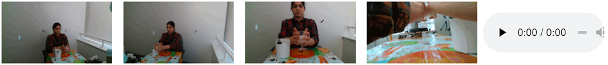
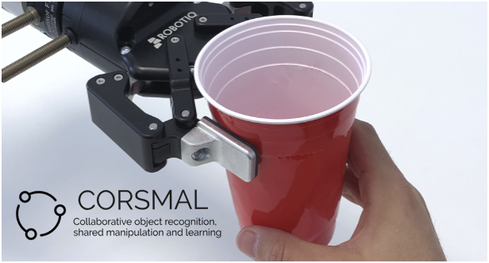

Blog
Recognizing the type and amount of content and the capacity of a container manipulated by a person for human-robot collaboration
CORSMAL featured a series of challenges where participants were invited to solve a range of tasks where a person manipulates a container for foods and drinks prior to hand the container over to a robot. The tasks were defined with the aim to understand different physical properties of containers and their content, such as the recognition of the amount of content (filling level classification), the type of content (filling type classification), and the capacity of drinking glasses, cups, or food boxes. See CORSMAL Container Manipulation, a dataset consisting of 1,140 audio-visual recordings with 15 different containers, 3 content types, and 3 content levels, for more details.
Two challenges were hosted during the schools organised by the Centre for Intelligent Sensing at Queen Mary University of London, one challenge was hosted at the 2020 International Conference on Pattern Recognition (ICPR), and one challenge was hosted at the 2022 IEEE International Conference on Acoustic, Speech and Signal Processing (ICASSP). A recent article, written together with the participants and published in IEEE Access, provides a formal review of six solutions submitted by the teams that took part to the challenge hosted at ICPR2020 for solving the tasks of the challenge.
The solution provided by Neeharika et al. is a sound-based classification of filling type and level with a 5-layer fully connected neural network that takes as input the absolute value of the Short-Time Fourier Transform (STFT).
The solution provided by Christmann and Song recognises the filling type with a neural network consisting of 2 convolutional layers and 1 linear layer and taking 40 normalized MFCC features as input. The solution also regresses the container capacity by extracting a region of interest (ROI) around the object localised in the depth data of the frontal view and providing the ROI and its size to a neural network that has 4 conv-batchnorm layers followed by 3 linear layers.
The code is available on GitHub.
The solution provided by Liu et al. in “VA2Mass: Towards the Fluid Filling Mass Estimation via Integration of Vision & Audio” recognises first the container category (cup, glass, box) with a majority voting on objects detected for each frame of the videos in the four camera views. For filling type and level classification, the solution trained a total of 6 category-specific Multi-layer perceptrons (MLPs) that takes as input spectrogram of the audio signals selected based on the recognised object category. For estimating the container capacity, the solution used Gaussian processes to regress the container capacity, depending on the estimated container category.
The solution provided by Donaher et al. in “Audio classification of the content of food containers and drinking glasses” jointly estimates the filling type and level to avoid infeasible cases (e.g., empty water or half-full none). The solution decomposed the problem into two steps, namely action recognition and content classification, and devised three independent CNNs. The first CNN (action classifier) identifies the manipulation performed by the human, i.e., shaking or pouring, and the other two CNNs are task-specific and determine the filling type and level. The choice of which task-specific network should be used is conditioned by the decision of the first CNN.
The code is available on GitHub.
The solution provided by Ishikawa et al. in “Audio-Visual Hybrid Approach for Filling Mass Estimation” tackles the three tasks with different algorithms. For recognising the content properties, multi-channel audio signals are converted into a log-Mel spectrogram of a fixed-size and audio frames extracted with a sliding window are provided as input to a convolutional neural network model with a VGG backbone. A majority voting is used to determine the filling type, whereas three stacked LSTMs are used to determine the filling level. For estimating the container capacity, the solution approximates the point cloud from the depth data of the localised object into a 3D cuboid and then computes the volume.
The code is available on GitHub.
The solution provided by Iashin et al. in “Top-1 CORSMAL Challenge 2020 submission: Filling mass estimation using multi-modal observations of human-robot handovers” also tackles the three tasks with different algorithms. For filling type classification, the solution averages the class probabilities predicted by a deep learning model (CNN + GRU ) and a traditional machine learning model (Random Forest), using only features extracted from the input audio signal. For filling level classification, the solution uses the same approach as before but also includes visual features extracted from the image sequences of all camera views by using R(2+1)D, a spatio-temporal CNN that is based on residual connections and convolutional layers that approximate 3D convolution by a 2D convolution (spatial) followed by a 1D convolution (temporal). Long temporal relations between the features of each window are estimated by using a RNN with a GRU model and logits from each camera view are summed together before applying the final softmax to obtain the class probabilities from the visual input. For estimating the container capacity, the solution uses a geometric-based approach that approximates the container shape to a cylinder in 3D via energy-based minimization to fit the points to the real shape of the object as observed in the RGB images of a wide-baseline stereo camera and constrained by the object masks.
The code is available on GitHub.
If you want to know more about the algorithms and a more in-depth analysis and comparisons of the results, check out the IEEE Access article, The CORSMAL benchmark for the prediction of the properties of containers.
How safe is it for a robot to handover a filled drinking glass to a human?
Safe human-to-robot handovers of unknown objects require accurate estimation of hand poses and object properties, such as shape, trajectory, and weight. Accurately estimating these properties with a real setup is challenging because no information about the object is available a priori to the robot. Most of the existing setups rely on accurate predictions from additional and expensive motion capture systems; objects that are easily recognisable in the scene because of their shape or colour, or equipped with markers; and/or thy rely on the use of scanned 3D object models. Handing over small containers, such as drinking glasses and cups, is then even more challenging due to their varying physical properties, such as deformability, transparency, and fragility, and changes in the appearance and shape when filled with a content.
In addition to this, testing handover algorithms with real robots may be dangerous for both human, object and robot itself, especially when for example the object is a container made of glass and open at the top, filled with a liquid. In order to safely perform the handover, the robot should understand the intention of the human passing the object and approach the human hand in an area of the object considered optimal to not harm the human, and grasp the object by closing the gripper with sufficient forces to hold the object while the human releases their hold.
Yik Lung Pang, a PhD student with the Centre for Intelligent Sensing at Queen Mary University of London, supervised by Dr. Changjae Oh and Prof. Andrea Cavallaro, and in collaboration with the Postdoctoral Research Assistant Alessio Xompero, investigated this problem under CORSMAL. The four researchers addressed potential safety issues for human and object before handing over it to the robot in a real environment, while requiring minimal hardware setup. They proposed a real-to-simulation framework that estimates the physical properties of unknown containers and their content from real videos of people manipulating the objects. These simulation environments provide an accurate, yet safe alternative for the development and evaluation of algorithms for human-to-robot handovers.
The real-to-simulation framework includes
Within the real-to-simulation framework the safeness of the handover is estimated as the probability of the robot gripper to touch the human hand (human safety) and the probability to drop, break or squeeze the container (object safety). To further increase the safety for the human, a safe grasp region that accounts for the available and unoccluded regions on the container held by the person, is estimated. The framework showed the safeness of handovers when using noisy estimates of the physical properties from a range of perceptual algorithms, including the vision algorithm and different perceptual and multi-modal algorithms (vision, sound), on selected video recordings from the CORSMAL Containers Manipulation dataset, where humans interact with different containers before a handover. While the proposed approach for safe region estimation avoids the robot to attempt grasping the object when the available grasping area is too small, accurately recognising the containers under different conditions (e.g., hand occlusions, different content types, transparencies, etc.) is still challenging and opens new research questions to the community.
The framework should encourage the development of further multi-modal algorithms, even without a physical robotic arm, fragile or deformable containers are manipulated, as well as when scanned 3D object models or expensive equipment, such as motion capture systems and markers, are both unavailable.
The work titled “Towards Safe Human-to-robot handovers of unknown containers” was published at the IEEE International Conference on Robot and Human Interactive Communication (RO-MAN) and was presented during the conference held virtually from the 8th to the 12th of August 2021 by Yik. Watch Yik’s presentation at RO-MAN 2021 by clicking here or read the publication here.
Alessio also presented the work as a poster session at the 2nd NAVER LABS Europe International Workshop on AI for Robotics. The workshop was organised online on 29th and 30th November 2021.
[link][back to top of the page]ICDL-EpiRob 2020 Presentation: How careful is a person in handing over an empty or full cup?
The fast advancements in robotics and perception make the deployment of smart robots in people houses and warehouses more and more an everyday reality, resulting in people cooperating with such robots and even handing objects to them. However, an apparently simple task like a dynamic and fluid object handover between two people may not be so easy to develop between a human and a robot. CORSMAL is investigating this problem with container-like objects (e.g. cups) whose properties, such as shape, size and material, may vary and at the same time, these objects might be either empty or be fully filled with water. Under these different circumstances, a person can manipulate the object differently and may increase the amount of attention when the object is not empty, thus creating different conditions for the control and decisions of the robot trying to achieve a smooth handover.
Nuno Ferreira Duarte, a Ph.D. student with the University of Lisboa and visiting student supervised by Prof. Aude Billard within the LASA lab at EPFL, investigated this problem under CORSMAL. Nuno designed a dynamical system that models the wrist kinematic movement during object handover to learn the adaptation of human manipulation to these object properties (empty cup or cup full of water). From prior acquisitions of human-to-human handovers, the dynamical system can distinguish between two behaviours: careful and not careful manipulation of objects. The model is then deployed within a robot controller to adapt on the fly the grasping and motion control during the human-to-robot handover based on the behaviour (and implicitly the type of object) of the person during the object manipulation. Nuno experimentally showed that this new dynamical system helps the robot controller understand if the person is being careful while manipulating the object for real-time human-to-robot interactions, as well as for tasks like pick-and-place that was not performed in the prior human-to-human experiments.
Nuno's work, titled “From human action understanding to robot action execution: how the physical properties of handled objects modulate non-verbal cues”, was published at the Joint IEEE 10th International Conference on Development and Learning and Epigenetic Robotics (ICDL-EpiRob), and it was presented during the conference held virtually from the 26th to the 30th of October 2020. Watch Nuno’s presentation at ICDL-EpiRob 2020 by clicking here or read his publication here.


CORSMAL Challenge at the 2020 Intelligent Sensing Summer School
The 2020 CORSMAL Challenge was hosted from 1st to 4th Sep at the 8th Intelligent Sensing Summer School, an event organised by the Centre for Intelligent Sensing and sponsored by the Alan Turing Institute and the Institute of Applied Data Science.
The challenge focuses on the estimation of the properties of previously unseen containers and their content (filling), while they are manipulated by a human and prior to a human-to-robot handover. Robot must determine on-the-fly the weight of a container to apply the correct force when grasping it, avoiding slippage, crashing the container or spilling its content. Therefore, the challenge defines the weight of the object handled by the human as the sum of the mass of an unseen container and the mass of the unknown filling within the container.
To compute the filling mass present in each container, participants were challenged to propose and develop a solution in three days about the estimation of the container capacity and the filling type and level. The event provided the participants with a large, multi- sensor, multi-modal dataset, CORSMAL Containers Manipulation (https://corsmal.eecs.qmul.ac.uk/containers_manip.html), consisting of 668 recordings for training and 236 for testing with different containers (9 training and 3 testing, evenly distributed among cups, glasses, and boxes) and three fillings (pasta, rice, water). Each team could choose which task to address, and which modality (audio, RGB videos, depth data, infrared videos), and which view (for visual data) to exploit. Although, the challenge encouraged teams to address all the tasks to win the final prize.
The team Challengers proposed to solve the classification of filling type and level using audio data. After suppressing the noise in each audio signal via spectral gating, the team extracted the absolute value of the Short-Time Fourier Transform (STFT) as input feature for a classifier based on a 5-layer fully connected neural network, trained with Adam optimizer and dropout on the last layer to reduce overfitting.
The team NTNU-ERC also classified the filling type using audio data to overcome limitations and challenges of visual data related to opaque containers, pouring action performed outside the field of view in some recordings, and missing annotation of the container localisation. Unlike Challengers, NTNU-ERC extracted 40 normalized MFCC features in a window size of 20 ms at 22 kHz, with a maximum length of 30 s. As there are sequences shorter than the window size, the team used zero-padding to preserve the same duration across audio data. MFCC features were then used as input to a neural network that consists of two convolutional layers and one linear layer and is trained with SGD optimizer. In addition to classifying the filling type, NTNU-ERC proposed to regress the container capacity by extracting a region of interest (ROI) around the object localised in the depth data of the fixed camera view mounted on the robot arm and providing the ROI and its size to a neural network. The network consists of four convolutional-batchnorm layers followed by three linear layers and trained with Adam optimizer. The size of the ROI (2-element vector) was concatenated to the feature between the second and third linear layer. To find the most reliable ROI, the team exploited the prior knowledge that the person will extend the arm towards the robot, while holding the container, and thus considered only detection up to 700 mm far from the camera processing the video backwards. Since the detector could find also the jug as second object, the team selected the closest contour to feed into the network.
The winning team, Because It's Tactile, addressed all the three tasks with independent solutions and different choices of input modalities. For filling type classification, the team extracted Short-Term features from windows of the spectral representation of stereo audio-signals converted to mono, and then provided the features as input to a random forest-based classifier. For filling level classification, the teams adopted a multi-modal solution with a late fusion strategy. From the audio signal, a set of features is extracted using a VGGish network, while a R(2+1)D architecture extracts the feature from the RGB videos. The features are independently provided as input to two recurrent neural networks with gate recurrent unit (GRU) to handle the intrinsic temporal relations of the signals. Finally, the team concatenated the output features as "expert" opinions to perform the final classification. For estimating the container capacity, the team enhanced the approach provided by CORSMAL, LoDE (LoDE.html), with depth and infrared data, and exploited the book class from the MS COCO dataset to handle boxes, given the LoDE limitation to handle only glasses/bottles. The modified LoDE reconstructs the object shape with a sparse of 3D points using the first frame and the window from the frame 20 until the last frame of the video.
A panel of four judges assessed the solutions and presentation provided by the teams in terms of objective performance scores (50%) with the final score weighed based on the number of tasks submitted, innovation and creativity (20%), quality of the presentation (20%), and distribution of workload across team members (10%). Because It’s Tactile achieved the top score in all criteria and won the CORSMAL Challenge at the 2020 Intelligent Summer School. Regarding the objective performance scores, Because It’s Tactile achieved the best results for filling type and filling level classifications with 93.83% and 79.38% Weighted Average F1-score, respectively, while NTNU-ERC achieved 68.25% Average Capacity Score, followed by Because It's Tactile with 37.95%. On the overall score (filling mass computed from the estimation of the other tasks for each recording), Because It's Tactile ranked first with 42.04% Average filling Mass Score, NTNU-ERC second with 38.89, and Challengers third with 38.47%.
Congratulations to the winning team and very well done to the other participants!
Stay tuned for the next CORSMAL Challenge!
[link][back to top of the page]

Multi-modal fusion and learning for robotics
On Wednesday 8 July, during the 2020 IEEE International Conference on Multimedia and Expo, we held a CORSMAL event on “Multi-modal fusion and learning for robotics”, which included several short presentations from experts and discussions with the audience.
The event was streamed live with the invited speakers, Giulia Vezzani (DeepMind), Yasemin Bekiroglu (UCL & Chalmers), Vincent Lepetit (ENPC ParisTech), and Rich Walker (Shadow Robot Company) talking in the first part. In the second part of the event, there was a short talk by Shahbaz Abdul Khader (KTH), followed by Alessio Xompero (QMUL) and Ricardo Sanchez-Matilla (QMUL). Alessio presented two Open datasets, namely CORSMAL Containers and CORSMAL Containers Manipulation, as well as LoDE, a method to estimate the shape of previoulsy unseen object instances in 3D, while Ricardo introduced our Benchmark for Human-to-Robot Handover.
Each group of four presentations was followed by informative discussions with the audience on challenges in multi-modal sensing and machine learning for robotics.
We enjoyed this event and thank all the speakers for their contribution, and we look forward to seeing you at the next CORSMAL events, which will take place in September, during the 2020 Intelligent Sensing Summer School, and in January, during the 25th International Conference on Pattern Recognition (ICPR2020).
[videos] [back to top of the page]

CHIST-ERA Workshop on Open Science in Transnational Research
The CHIST-ERA Workshop on Open Science in Transnational Research was organised by the Swiss National Science Foundation (SNSF) on 6 March 2020 at SNSF, Bern (Switzerland). Open Science experts and CHIST-ERA representatives assessed the policies for Open Science in Europe as well as practises, platforms and tools currently available to researchers.
The event was streamed live (agenda) and, among other speakers, Prof. Andrea Cavallaro presented the Collaborative Object Recognition, Shared Manipulation And Learning (CORSMAL) project. The presentation introduced our benchmark for human-to-robot handover, two Open datasets, namely CORSMAL Containers Dataset and CORSMAL Containers Manipulation Dataset, and the upcoming CORSMAL events at the IEEE International Conference on Multimedia and Expo 2020 (ICME2020) and at the International Conference on Pattern Recognition 2020 (ICPR2020).
The CORSMAL project aims at releasing software, data, and research findings across the partners and CHIST-ERA Workshop provided an optimal forum where to discuss Open Science and the best practice to shape new policies and the related roadmap.
[presentation] [back to top of the page]
CORSMAL Challenge: Multi-modal fusion and learning for robotics at ICME 2020
Participants will create machine learning models for estimating the physical properties of containers that have never been seen before. The only prior information available is a set of container categories (glasses, cups and food boxes) and a set of filling types (water, pasta, and rice).
Within the Challenge, an annotated dataset composed of video (RGB, infrared and depth), audio (microphone array), and inertial (accelerometer and gyroscope) data is released for training and development of new models. The dataset comprises more than 1,000 sequences composed of 15 containers, 3 fillings, and 3 fullness levels.
All details and data can be found at ICME2020_Challenge.html.
Follow all the updates @corsmal.
CORSMAL Challenge at the 2019 Intelligent Sensing Summer School (London, 2-6 September)
The first CORSMAL challenge was held during the 2019 Intelligent Sensing Summer School (http://cis.eecs.qmul.ac.uk/school2019.html) at Queen Mary University of London.
The overall aim of the challenge was to enable a dynamic hand-over between a human and a robot of an unseen object (e.g. a cup) with an unknown filling. Participants worked in small groups on various tasks, such as the estimation of the object dimensions, mass, and fullness, as well as grasp points estimation, object tracking and pose estimation. Each team designed and implemented a solution for a chosen task, and presented their work [slides] in front of a panel of judges.
Groups had a short time to work on the challenge (36 hours!), and their solution included detection and localisation of objects trough hand tracking and depth map segmentation for object tracking, and object dimension estimation with the design of Convolutions Neural Networks for object dimension estimations.
The winning team localized the object of interest and estimated the grasp points through a Real-Time Hand-Detector based on Single Shoot Detector neural network followed by a segmentation-depth based procedure to localise the object held by the person.
Stay tuned for the next CORSMAL challenge!
Benchmarking: from single modality to multi-modal perception for robotics
Benchmarking is fundamental to advance research. Here we expose the benchmarks used in perception (video and audio) and robotics, while you can check out our previous post to know more about Open Research Data & Data Sharing link.
The vision community has developed multiple evaluation platforms, including the KITTI Vision Benchmark Suite (http://www.cvlibs.net/datasets/kitti) that consists of a dataset captured by a set of sensors in a car for tasks such as stereo-camera processing, optical flow, visual odometry, 3D object detection and 3D tracking, by providing raw data, benchmarks and evaluation metrics for the different tasks; the Multiple Objects Tracking (MOT https://motchallenge.net) benchmark that allows a fair evaluation of multi-person tracking algorithms by providing a dataset, person detections, a common evaluation protocol and several specific challenges; and the Middlebury Stereo Vision campaign (http://vision.middlebury.edu/stereo) for the evaluation of stereo-vision algorithms by distributing several stereo datasets with ground-truth disparities and by allowing an online submission system to automatically evaluate new algorithms. Audio-focused campaigns include the Signal Separation Evaluation Campaign (SiSEC https://sisec.inria.fr) which is community-based and allows the comparison of the performance of source audio separation systems on the same data and metrics; and the CHiME (http://spandh.dcs.shef.ac.uk/chime_challenge/index.html) Speech Separation and Recognition Challenge which aims to standardise data and evaluation metrics for conversational speech recognition.
In robotics, there exists the YCB benchmark (http://www.ycbbenchmarks.com) that facilitates benchmarking for robotic manipulation by providing a set objects with different shapes, sizes, textures, weight and rigidity, their mesh models and high-resolution RGB-D scans as well as widely used manipulation sets for models easy to incorporate into manipulation and planning software platforms; the Amazon Picking Challenge (http://amazonpickingchallenge.org) that is designed to evaluate solutions for robotic pick-and-place in tasks that go from picking packages in a logistics centre to bin-picking in a manufacturing plant, from unloading groceries at home to clearing debris after a disaster; the ACRV picking benchmark (http://juxi.net/dataset/acrv-picking-benchmark) that contains 42 commonly-available shelf objects, a set of stencils and standardised task setups to replicated real-world conditions; and the Surreal Robotics Suite (https://surreal.stanford.edu) that is a toolkit and simulation benchmark designed to enable reproducible robotics research and to make Deep Reinforcement Learning in robot manipulation accessible to everyone, by introducing an open-source, reproducible and scalable distributed reinforcement learning framework.
CORSMAL will be providing the research community with a benchmark for multi-modal perception. Follow us on twitter @corsmal for updates.
CHIST-ERA Projects Seminar 2019
The CORSMAL team has contributed to the Open Research Data & Data Sharing special session CHIST-ERA Projects Seminar 2019, held on 3 and 4 April in Bucharest (link to the slides of our presentation).
Open Research Data and Data Sharing are parts of the Open Science movement that aims to enable sustainable and reproducible research. CORSMAL aims to share Data and Models that enable human-robot handover of unknown objects.
Significant efforts are required to properly obtain, annotate and curate Data, and an Open platform can accelerate the design and validation of new solutions and accelerate the spreading of novel ideas. Along with Data, an Open Evaluation Methodology & Experiment Reproducibility is fundamental to formally assess the performance. Examples of such platforms already exist for computer vision and audio analysis (research areas directly related to CORSMAL), as well as for specific robotic tasks. However, the human-in-the-loop scenario considered in our project makes Reproducibility a very challenging task.
CORSMAL is committed to Open Science and we aim to create and distribute Datasets, Models and Evaluation Protocols for the development of collaborative solutions for human-robot object handover through visual, auditory and tactile sensing. We hope that our efforts will enable the advancement of the research and the formulation of new solutions to predict the movements of a person and to estimate the physical properties of objects, and in turn allow accurate, robust and safe planning for the handover.
Stay tuned!
Sponsors


Partners